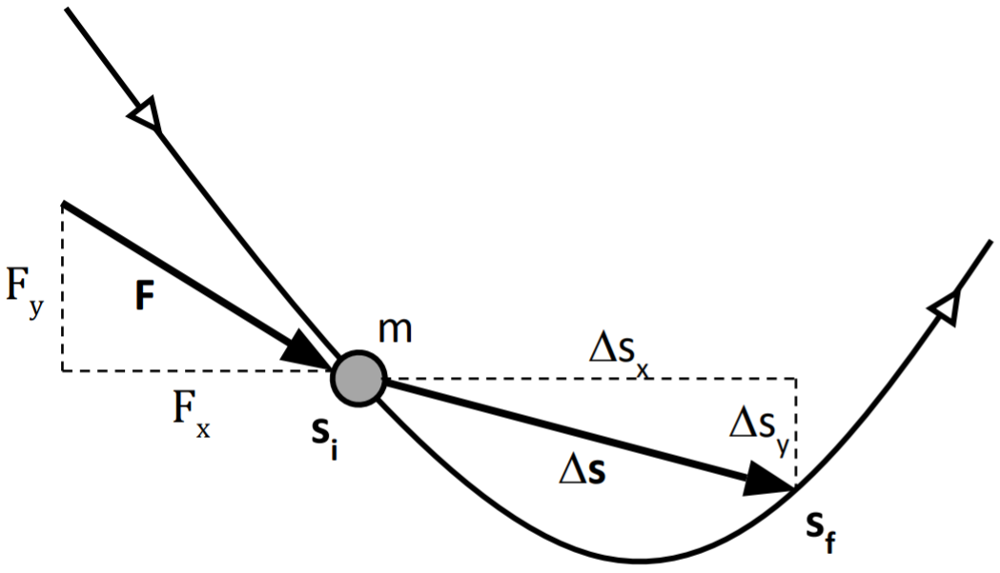

-
descriptionEl origen de la fórmula y la notación de la densidad
Tanto en las ciencias como en la vida diaria, el concepto de densidad se aplica a entes muy diversos (masa, carga, corriente, población, etc.). Por ello a veces es necesario precisar que la definición presentada se refiere a la densidad volumétrica de masa.
En el caso de materiales no homogéneos, aquéllos cuya masa no se halla distribuida uniformemente como, por ejemplo, la atmósfera terrestre, la relación $ρ = m/V$ define la densidad media del material. Para este tipo de materiales, a veces es necesario definir además una densidad puntual, cuyo valor puede variar de un punto a otro. Para esto, es necesario considerar una serie de volúmenes $ΔV$ que contengan al punto $P$ en el que se desea determinar la densidad puntual, cada vez más pequeños, como sugiere la figura siguiente.
El límite $ρ(P)$ al que tiende la sucesión de valores del cociente $Δm/ΔV$, para las masas $Δm$ contenidas en los volúmenes de la serie, es la densidad puntual del material en ese punto. Esto es,
$$ρ(P) = \lim_{ΔV \to 0}{\frac{Δm}{ΔV}}.$$
Acerca de la notación
No se sabe cuándo y por qué se adoptó la letra $ρ$ para denotar a la densidad volumétrica. Erik Anson, estudiante de doctorado en física, publicó en internet, en 2015, su propia conjetura al respecto. Fijándose en las letras griegas que se utilizan para denotar a los diversos tipos de densidad, observa lo siguiente:
Letra griega Equivalente a la letra Denota la densidad $λ$ l a lo largo de una línea. $σ$ s a lo largo de una superficie. $ρ$ r a lo largo de una región (volumen). (https://www.quora.com/Why-is-the-Greek-letter-%CF%81-rho-used-to-symbolize-density)
-
descriptionEl origen de la fórmula y la notación de la dimensión
Para describir los objetos y eventos del mundo físico, la ciencia utiliza dos tipos de magnitudes: fundamentales, que se pueden medir físicamente en términos de una unidad, como la longitud, la masa, y el tiempo, entre otras, y derivadas, que se calculan a partir de otras magnitudes físicas por medio de relaciones matemáticas, como la velocidad ($V=d/t$), la energía cinética ($K=mv^2/2$), etc.
Cada tipo de magnitud fundamental tiene por definición su propia dimensión. Supongamos que la magnitud A es una longitud, por ejemplo, la estatura de una persona o la distancia entre dos postes. Esto es, $A=l$, donde $l$ es la variable que representa los valores posibles de A. En este caso decimos que A “tiene la dimensión de longitud” y representamos este enunciado con la fórmula:
$$[A]=L,$$
que evidentemente resulta de la ecuación $A=l$, al escribir la magnitud $A$ entre corchetes y sustituir a la variable $l$ por el símbolo “L” de la longitud.
Lo que esta fórmula indica es que, si el tamaño de la unidad de longitud se incrementara por un factor $n$, el valor numérico de la magnitud se modificaría por un factor $n^{-1}$, y su nuevo valor sería
$$A'=n^{-1}A$$
Por ejemplo, si el metro patrón duplicara su longitud ($n = 2$), el valor numérico de la longitud de cada objeto se reduciría a la mitad de su valor original ($n^{-1} = ½$).
La dimensión de una magnitud derivada comunica el mismo tipo de información de una manera generalizada. Por ejemplo, en el caso de la velocidad, que se define por la relación $V = d/t = (d)(t^{-1})$, en la que $d$ es distancia y $t$ tiempo, si la unidad de longitud cambia por un factor $n_L$ y la de tiempo por un factor $n_t$, el valor numérico de la velocidad cambiará a
$$V'=n^{-1}V,$$
donde $n = (n_L)(n_t)^{-1}$. Entonces, por analogía con el significado dado al término “dimensión” para las magnitudes fundamentales, se dice que la dimensión de la magnitud derivada “velocidad” es
$$[V]=(L)(t)^{-1}$$
fórmula que obviamente resulta de la relación $V=(d)(t)^{-1}$, y se expresa en términos de las magnitudes fundamentales longitud y tiempo.
Un ejemplo más. Para la energía cinética de una partícula de masa $m$ con velocidad $v$, puesto que $K = mv^2/2$ o, desarrollando, $K = m(d/t)^2/2 = (m)(d)^2(t)^{-2}/2$, vemos que la dimensión de $K$ tiene la fórmula
$$[K]=(M)(L)^2(t)^{-2}.$$
Y así, para cualquier otra magnitud derivada.
Otras acepciones
La definición presentada aquí es la que se usa en física para los fines de un procedimiento llamado análisis dimensional. Sin embargo, en el lenguaje ordinario, y en la misma física, la palabra “dimensión” se utiliza también con otras acepciones. Por ejemplo, la medida de un objeto en una determinada dirección: su largo, su ancho, etc.
-
descriptionEl origen de la fórmula y la notación de la energía cinética
La energía cinética es una de las formas de energía posibles de un sistema físico. En el caso de un sistema formado por una sola partícula, la acción de una fuerza $F$ constante en la dirección en que ésta se mueve incrementará o reducirá su rapidez, y con ella su energía de movimiento, dependiendo de que la fuerza se ejerza en el sentido de la velocidad o en sentido contrario. La relación precisa entre la fuerza aplicada y el cambio en la energía cinética de la partícula se deduce de la segunda ley de Newton:
$$F=m\frac{dv}{dt}.$$
Para ello es necesario expresar la derivada de la rapidez con respecto al tiempo, en términos de su derivada con respecto a la coordenada $s$ de posición. Esto se logra por medio de la Regla de la Cadena del cálculo diferencial:
$$\frac{dv}{dt}=\frac{dv}{ds}\frac{ds}{dt}=v\frac{dv}{ds},$$
donde se ha usado el hecho de que $v = ds/dt$. De este modo la segunda ley de Newton se expresa como:
$$F=mv\frac{dv}{ds},$$
o bien, en la forma diferencial equivalente:
$$mv\,dv = F\,ds$$
Integrando ambos miembros de la ecuación, para el espacio que recorre la partícula desde una posición inicial $s_i$, hasta una posición final $s_f$,
$$m\int_{v_i}^{v_f}v\,dv = \int_{s_i}^{s_f}F\,ds,$$
obtenemos:
$$\frac{1}{2}mv_f^2-\frac{1}{2}mv_i^2=F(s_f-s_i),$$
donde $v_i$ y $v_f$ son valores de la rapidez en posiciones inicial $s_i$ y final $s_f$, respectivamente.
El primer miembro de esta expresión representa el cambio en la energía cinética de la partícula $ΔK = K_f - K_i$ y, el segundo, el trabajo $W = F Δs$, realizado sobre ella por la fuerza F. Por lo tanto, la segunda ley de Newton demuestra que
$$ΔK=W$$
es decir, que el trabajo realizado por una fuerza sobre una sola partícula es igual al cambio en la energía cinética de ésta.
La energía cinética en el plano
De la segunda ley de Newton:
$$(F_x, F_y)=m\left(\frac{dv_x}{dt},\frac{dv_y}{dt}\right)$$
Ecuaciones escalares equivalentes a la ecuación vectorial:
$$F_x=m\frac{dv_x}{dt} \quad\quad F_y=m\frac{dv_y}{dt}$$
Por medio de la Regla de la Cadena del cálculo diferencial:
$$\frac{dv_x}{dt}=\frac{dv_x}{ds_x}\frac{ds_x}{dt}=v_x\frac{dv_x}{ds_x} \quad\quad \frac{dv_y}{dt}=\frac{dv_y}{ds_y}\frac{ds_y}{dt}=v_y\frac{dv_y}{ds_y}$$
Si se tratan las ecuaciones anteriores, por un lado, para las componente $F_x$, $v_x$ y $s_x$ y, por otro, para las componentes $F_y$, $v_y$ y $s_y$, con el procedimiento utilizado en el caso de movimiento unidimensional, se obtiene:
$$\frac{1}{2}mv_{x_f}^2-\frac{1}{2}mv_{x_i}^2=\int_{s_{x_i}}^{s_{x_f}}F_x\,ds_x \quad\quad \frac{1}{2}mv_{y_f}^2-\frac{1}{2}mv_{y_i}^2=\int_{s_{y_i}}^{s_{y_f}}F_y\,ds_y$$
donde $v_{x_i}$, $v_{x_f}$, $v_{y_i}$ y $v_{y_f}$, son las componentes de la velocidad en las posiciones inicial $(s_{x_i} , s_{y_i})$ y final $(s_{x_f} , s_{y_f})$ de la partícula.
La suma de las dos últimas ecuaciones da como resultado:
$$\frac{1}{2}mv_{x_f}^2 + \frac{1}{2}mv_{y_f}^2 - \frac{1}{2}mv_{x_i}^2 - \frac{1}{2}mv_{y_i}^2=\int_{s_{x_i}}^{s_{x_f}}F_x\,ds_x + \int_{s_{y_i}}^{s_{y_f}}F_y\,ds_y$$
esto es,
$$\frac{1}{2}mv_f^2 - \frac{1}{2}mv_i^2 = \int_{s_i}^{s_f}(F_x\,ds_x + F_y\,ds_y)$$
puesto que $v_{x_i}^2+v_{y_i}^2=v_i^2\;$ y $\;v_{x_f}^2+v_{y_f}^2=v_f^2$.
Y, dado que, en la notación vectorial,
$$\int_{s_i}^{s_f}(F_x\,ds_x + F_y\,ds_y) = \int_{s_i}^{s_f}(F_x,F_y)⋅(ds_x,ds_y)$$
la última expresión del desarrollo anterior se puede reescribir en la forma siguiente:
$$\frac{1}{2}mv_f^2 - \frac{1}{2}mv_i^2 = \int_{s_i}^{s_f}(F_x,F_y)⋅(ds_x,ds_y)$$
El primer miembro de esta expresión representa el cambio en la energía cinética de la partícula $ΔK = K_f - K_i$ y, el segundo, el trabajo $W=\int_{s_i}^{s_f}F⋅ds$, realizado sobre ella por la fuerza $F=(Fx,Fy)$.
Por lo tanto, de la segunda ley de Newton se deduce que, tal como sucede en el caso de movimiento unidimensional:
$$ΔK=W,$$
es decir, que el trabajo realizado por una fuerza sobre una partícula es igual al cambio en la energía cinética de ésta.
Acerca de la notación
Muchos autores denotan a la energía cinética por la letra K, inicial de la palabra inglesa “kinetic” que significa “cinético” o “cinética”, y proviene de la palabra griega "κινητικόζ", que significa “que mueve”.
Por su parte, el uso de la letra W para denotar el trabajo proviene de la palabra inglesa “work”, que significa “trabajo”.
-
descriptionEl origen de la fórmula y la notación de la energía potencial
Se dice que la energía potencial es una energía de interacción, porque se debe a fuerzas que ejercen entre sí los diferentes objetos que constituyen el sistema. La interacción almacena energía que tiene el potencial de convertirse en energía cinética o de otro tipo.
Cuando uno de los objetos cambia de posición, la energía potencial $U$ del sistema experimenta un cambio $ΔU$, igual al (negativo del) trabajo realizado por las fuerzas de interacción que actúan sobre el objeto, mientras éste se desplaza desde su posición inicial $i$ hasta una posición final $f$. Esto es,
$$ΔU=-W(i \to f).$$
El signo menos, en esta expresión, indica que cuando el desplazamiento ocurre en el sentido de la fuerza, la energía potencial disminuye.
La energía potencial es una propiedad del sistema. Depende de las posiciones relativas de los objetos que lo forman, pero no de la manera particular como éstos hayan llegado a ocupar tales posiciones. Por ello, el cambio $ΔU$ que experimenta la energía potencial cuando alguno de los objetos cambia de posición, y el trabajo $W (i \to f)$ correspondiente, son independientes de la trayectoria que sigue el objeto. Sus valores dependen únicamente de las posiciones inicial y final. Por lo tanto, si el objeto regresa a su posición inicial, la energía potencial del sistema recupera el valor que tenía antes del cambio, de manera que $ΔU = 0$ para el ciclo completo $i \to f \to i$. Por esta razón se dice que las fuerzas asociadas con la energía potencial son fuerzas conservativas.
Algunos ejemplos comunes de energía potencial son los siguientes.
-
Gravitacional, en un sistema de dos cuerpos de masas $m_1$ y $m_2$, separados una distancia $r$:
$$U=-G\frac{m_1m_2}{r},$$
donde $G$ es la constante de la gravitación universal.
-
Gravitacional, cerca de la superficie de la tierra (bajo la aproximación de superficie plana):
$$U=mgy,$$
donde $m$ es la masa de un objeto situado a una altura $y$, y $g$ es la aceleración local de la gravedad.
-
Elástica, en un sistema masa-resorte-soporte:
$$U=\frac{1}{2}kx^2,$$
donde $k$ es la constante del resorte y $x$ su deformación.
-
Eléctrica, en un sistema de dos cargas puntuales $q_1$ y $q_2$, separadas a una distancia $r$:
$$U=K\frac{q_1q_2}{r},$$
donde $K$ es la constante de la ley de Coulomb.
-
Eléctrica, en un capacitor de placas paralelas con carga $Q$:
$$U=\frac{Q^2d}{2ϵ_0A},$$
donde $d$ es la distancia entre las placas, $A$ el área de cada una de éstas y $ϵ_0$ la permitividad eléctrica del vacío.
Acerca de la notación
Se desconoce la razón por la que William Rankine eligió utilizar la letra U para denotar a la energía potencial, en un artículo de 1853. Se conjetura que podría deberse al hecho de que la U es intercambiable lingüísticamente con la letra V, que tradicionalmente ha denotado el “voltaje” o potencial eléctrico, el cual guarda estrecha relación con la energía potencial eléctrica (https://www.quora.com/Why-is-U-thesymbol-for-potential-energy).
El uso de la W para denotar el trabajo proviene de la palabra inglesa “work”, que significa “trabajo”.
-
-
descriptionArtículo 1
En varios textos de Termodinámica del nivel de licenciatura se habla de la ecuación del gas ideal como una definición, pura y simplemente, o como un caso límite del factor de compresibilidad, el cual se presenta sin apelar al comportamiento del gas ideal.
Es probable que los autores de estas obras crean que el estudiantado sabe desde el bachillerato la conexión que hay entre las leyes de los gases y la ecuación del gas ideal.
En la literatura técnica, sobre todo en la europea, suele denominarse a esta última la ecuación de Clapeyron y de Mendeléiev. Las leyes de los gases son tres, correspondientes a tres de los procesos casi estáticos más importantes en el estudio de la termodinámica clásica.
Si se usa la simbología más aceptada para una masa constante de un gas se tendría el glosario que sigue:
$\mathrm{P}$ = presión absoluta
$\mathrm{v}$ = volumen específico
$\mathrm{T}$ = temperatura absolutaLa ecuación de Clapeyron y de Mendeléiev es
$$\mathrm{\frac{Pv}{T}=R}$$
A las leyes de los gases puede agrupárselas
Proceso Ley de Expresión matemática isotérmico Boyle y de Mariotte $$\mathrm{Pv = constante_{BM}}$$ isobárico Charles $$\mathrm{\frac{v}{T}={\rm constante}_{Ch}}$$ isométrico Gay-Lussac $$\mathrm{\frac{P}{T}={\rm constante}_{GL}}$$ ¿Conoce usted cómo se combinan las tres leyes de los gases para obtener la ecuación del gas ideal?
Si no tiene la certeza, considere el análisis que sigue.
Sea una masa constante de un gas que pueda existir en tres estados termodinámicos diferentes
Estado Temperatura absoluta ($\mathrm{K}$) Presión absoluta Volumen específico $$\mathrm{\left(\frac{m^3}{cantidad\ de\ sustancia}\right)}$$ a $\mathrm{T_a}$ $\mathrm{P_a}$ $\mathrm{v_a}$ b $\mathrm{T_b = T_a}$ $\mathrm{P_b}$ $\mathrm{v_b}$ c $\mathrm{T_c}$ $\mathrm{P_c}$ $\mathrm{v_c = v_a}$ Conecte a los estados a y b mediante la ley de Boyle y de Mariotte
$$\mathrm{P_av_a=P_bv_b}$$
$$\mathrm{P_a=P_b\frac{v_b}{v_a}=P_b\frac{v_b}{v_c}}$$
Conecte a los estados a y c mediante la ley de Gay-Lussac
$$\mathrm{\frac{P_c}{T_c}=\frac{P_a}{T_a}}$$
$$\mathrm{\frac{P_cT_a}{T_c}=P_a=\frac{P_bv_b}{v_c}}$$
De donde
$$\mathrm{\frac{P_cT_a}{T_c}=\frac{P_bv_b}{v_c}}$$
pero como $\mathrm{T_a}$ es igual a $\mathrm{T_b}$
$$\mathrm{\frac{P_cv_c}{T_c}=\frac{P_bv_b}{T_b}}$$
Cada término es de la misma forma. La diferencia única está en el subíndice que identifica a cada estado.
Para que estas igualdades resulten correctas es necesario y suficiente que cada término sea igual a una constante.
Sea esta constante $\mathrm{R}$
$$\mathrm{\frac{P_cv_c}{T_c}=\frac{P_bv_b}{T_b}=R}$$
que no es ninguna otra que la ecuación de Clapeyron y de Mendeléiev. -
descriptionArtículo 2
En otro artículo de la sección “¿HAY ALGUNA RAZÓN?” se discute la forma en la que hay que combinar a las tres leyes de los gases ideales para encontrar a la ecuación de Clapeyron y de Mendeléiev.
En ese artículo se daba como un hecho que la temperatura debería ser necesariamente la temperatura absoluta, la que se encontró gracias a los experimentos de Gay-Lussac, mucho tiempo antes del descubrimiento de la ley segunda de la termodinámica.
En ese mismo artículo se daba por sentado que la presión debería ser necesariamente la presión absoluta, pero no se daba ningún argumento para sustentar esa creencia, así que en este artículo se presentarán algunas ideas para arrojar algo de luz en este asunto.
Los experimentos de E. Torricelli, que le permitieron la determinación de la presión ambiental y el descubrimiento de un cero natural para la medición de la presión, anteceden a la primera y más antigua de las leyes de los gases, la ley de R. Boyle y de E. Mariotte.
Es de suponer que ambos científicos apreciaron la bondad del uso de la presión absoluta en vez de la muy variante presión relativa (la que usa como referencia a la presión del entorno del lugar). Sin embargo, esta presunción no debería dejar satisfecha la curiosidad de quien se enfrasque en el estudio de la termodinámica clásica. ¿No habrá algún argumento de peso, lo suficientemente convincente como para disipar las dudas?
Recordemos a la ley de Boyle y de Mariotte, en donde $\mathrm{v}$ = volumen específico del gas y $\mathrm{P}$ = la presión (que tal vez no se sepa que debería ser la absoluta):
$$\mathrm{P_av_a = P_bv_b}$$
Como se conoce de los cursos de matemáticas, una expresión como la previa, en la que los términos de la igualdad son de la misma naturaleza, y que difieren entre sí solamente por los subíndices, deberían ser, todos y cada uno de ellos, iguales a una constante
$\mathrm{P_av_a = P_bv_b = constante}$ (ξ)
Ahora bien, recuerde que si no se supiese que en la expresión matemática debería usarse la presión absoluta, podría usarse la presión relativa.
En primer lugar, debe recordarse que para una masa de un gas ideal el volumen específico es siempre mayor que cero. ¿Qué hay de la presión?
La cualidad de la presión absoluta es que no puede valer cero (excepto en la situación física inalcanzable del vacío perfecto).
La cualidad de la presión relativa es que vale cero (automáticamente) cuando el sistema está a la misma presión que su entorno.
En este caso, podría ser, si se usase la presión relativa en la ley de Boyle y de Mariotte, que uno de los términos resultase igual que cero.
Pero si la ecuación (ξ) fuese cierta, entonces todos los términos deberían ser cero, lo que haría que la ley de Boyle y de Mariotte resultara de una validez más bien restringida.
Para evitar ese inconveniente, debería usarse exclusivamente a la presión absoluta. Argumento primero a favor del uso de la presión absoluta.
Otro argumento que podría usarse para reforzar la idea de la obligatoriedad del uso de la presión absoluta en las expresiones de las leyes de los gases es la de la elegancia matemática.
¿Desea el uso de la presión relativa en los modelos matemáticos? Piense en que la presión del entorno sea Pent y que la presión relativa del estado “d” sea Preld.
Por ahora, use la idea de la presión absoluta
$$\mathrm{P_dv_d = (P_{ent} + P_{reld})v_d}$$
Si se desea la expresión de la ley de Boyle y de Mariotte con este estilo se tendría
$$\mathrm{(P_{ent} + P_{reld})v_d = (P_{ent} + P_{relc})v_c = constant}$$
No se puede el no apreciar que este modelo matemático es mucho más engorroso, y por lo tanto, menos elegante y sencillo que el respectivo con el uso de la presión absoluta. Argumento segundo a favor del uso de la presión absoluta.
Trate de recordar los argumentos previos para que, de ahora en adelante, tenga la certeza de que las leyes de los gases tienen las expresiones sencillas y elegantes gracias al empleo de la presión absoluta.
-
descriptionArtículo 3
En un texto de Termodinámica1 puede leerse:
Aunque a través de la termodinámica clásica pueden predecirse muchas relaciones entre las propiedades de la materia, ella no puede explicar por qué tales relaciones tienen su forma particular.
Por ejemplo, puede observarse que, con argumentos termodinámicos, la capacidad térmica específica a presión constante de una sustancia pura (como el nitrógeno, el agua, el amoniaco o el dióxido de carbono) es siempre mayor que la capacidad térmica específica a volumen constante de la misma sustancia pura en el mismo estado.
Pero la explicación de tal comportamiento no puede darla la termodinámica clásica.
Sin embargo, quien tenga un conocimiento mínimo de la termodinámica clásica podría preguntarse si la aseveración del texto es correcta.
¿Qué conexión existe entre las capacidades térmicas específicas a presión y a volumen constante?
Sean las definiciones:
la de la capacidad térmica específica a presión constante:
$$\mathrm{c_P=\ \left(\frac{\partial h}{\partial T}\right)_P}$$
en donde $\mathrm{h}$ representa a la entalpia específica: $\mathrm{h = u + Pv}$,
$\mathrm{T}$ representa a la temperatura,
$\mathrm{P}$ representa a la presión absoluta.
La de la capacidad térmica específica a volumen constante:
$$\mathrm{c_v=\ \left(\frac{\partial u}{\partial T}\right)_v}$$
en donde $\mathrm{u}$ representa a la energía interna específica,
$\mathrm{T}$ representa a la temperatura.
$\mathrm{v}$ representa al volumen específico.
Para el caso de los gases ideales se conoce la “Ley de Joule” (de los gases ideales) que puede expresarse según:
$$\mathrm{du = c_vdT}$$
y que en español se lee como “la energía interna específica de un gas ideal es función exclusivamente de la temperatura”.
Al seguir con la idea del gas ideal, la entalpia específica:
$$\mathrm{h = u + Pv}$$
puede escribirse como:
$$\mathrm{h = u + RT}$$
en donde $\mathrm{R}$ es la constante del gas ideal.
De la expresión última puede concluirse que la entalpia específica de un gas ideal es función exclusivamente de la temperatura.
Por ello, las definiciones de las capacidades térmicas específicas para el gas ideal se simplifican:
$$\mathrm{c_v=\frac{du}{dT}, c_P=\frac{dh}{dT}}$$
de donde, con argumentos puramente de la termodinámica clásica se llega a:
$$\mathrm{c_P=\frac{dh}{dT}=\frac{d\left(u+RT\right)}{dT}=\frac{du}{dT}+R=c_v+R}$$
que significa que la capacidad térmica específica a presión constante es mayor que la capacidad térmica específica a volumen constante.
¿Le quedan dudas que para las sustancias incompresibles se cumpla esta observación?
1 Ingeniería Termodinámica. Fundamento y aplicación, 2a edición. Francis F. Huang. CECSA 1994.